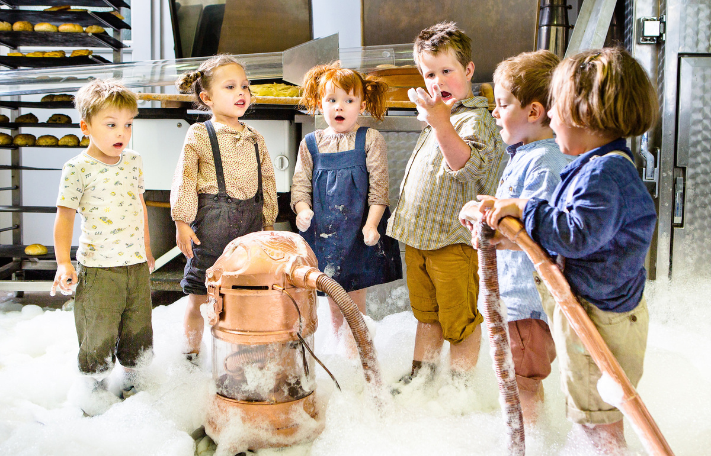
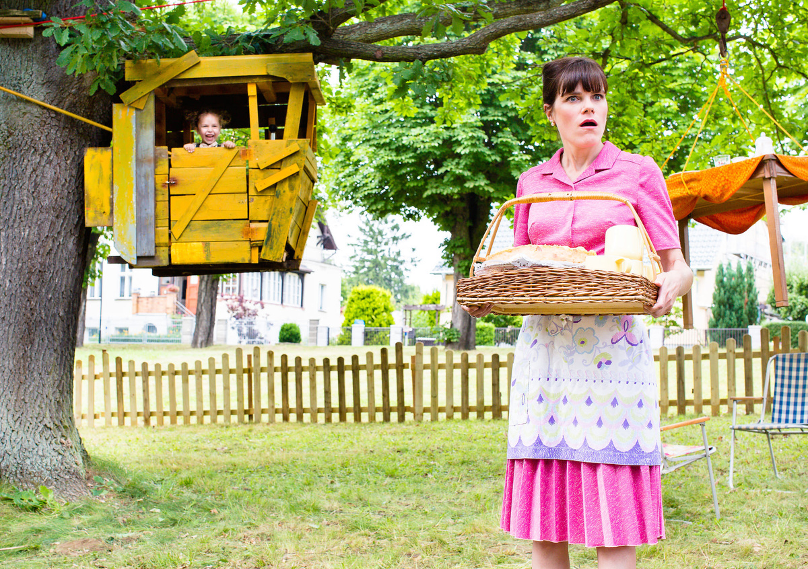
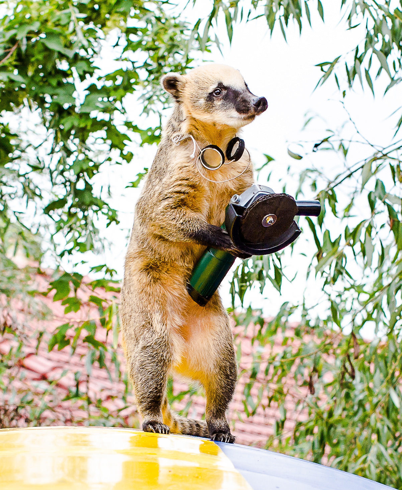
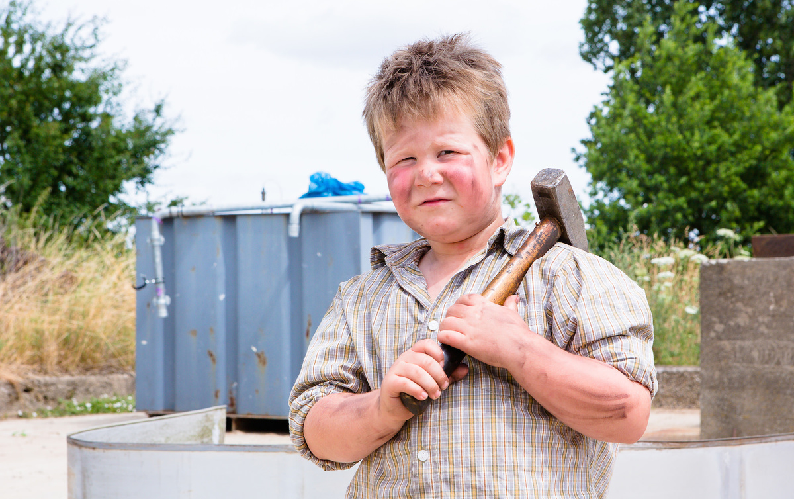
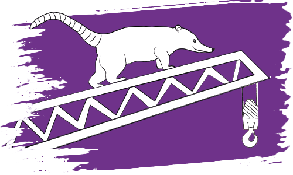
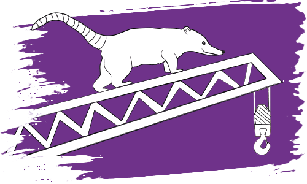

Das Leben der Kinder von Bollersdorf könnte so schön sein, wenn der Ort wegen seiner Durchschnittlichkeit nicht von der Gesellschaft für Konsumforschung entdeckt worden wäre. Hier sollen neue Produkte getestet werden. Was den Bollersdorfern gefällt, lässt sich überall gut verkaufen, wissen die Marktforscher. Doch während die Eltern des Ortes begeistert mitmachen, haben ihre Kinder schnell die Rotznasen voll von den lästigen Warentestern. Erst recht, als sie ihre geliebten Omas und Opas ins Heim abschieben wollen, damit der Altersdurchschnitt wieder passt. Das ist ein Fall für die Nasenbärenbande! Gemeinsam mit dem pfiffigen Nasenbären Quatsch hecken die Kinder einen cleveren Plan aus: Mit abenteuerlichen Erfindungen und verrückten Weltrekorden wollen sie Bollersdorfs Einzigartigkeit beweisen, damit die Konsumforscher endlich wieder verschwinden…




CAST Kinder
RIEKE Nora Börner
MAX Justin Wilke
LENE Charlotte Röbig
PAUL Pieter Dejan Budak
SUSE Henriette Kratochwil
BEN Mattis Mio Weise
CAST
GABY Fritzi Haberlandt
FRIEDA Vera Kluth
MARIANNE Nadeshda Brennicke
GERHARD Samuel Finzi
FRITZ Ulrich Voss SABINE Jule Böwe
ELKE Margarita Broich JÖRG Wolfram Koch
OTTO Fabian Busch
REMBERT Ulrich Krohm
TIERPFLEGER Benno Fürmann RICHTER DER WELTREKORDE Rolf Zacher
GKF MANAGER Alexander Scheer
STADTRAT Udo Schenk
CREW
REGIE Veit Helmer
DREHBUCH Hans-Ullrich Krause, Veit Helmer
CASTING Lisa Stutzky KINDERCASTING Jacqueline Rietz
KAMERA Felix Leiberg
SCHNITT Vincent Assmann
TON Julian Cropp
MUSIK Cherilyn MacNeil, FM Einheit,
Ingfried Hoffmann,
Lars Löhn,
Malcolm Arison,
Pit Baumgartner,
Shantel
SZENENBILD Anne Zentgraf
KOSTÜME Mareike Bay
MASKE Daniela Blaschke
PRODUZENT Veit Helmer
QUATSCH und die Nasenbärbande zum
nachlesen & nachhören!
QUATSCH MIT SOSSE
Quatschs Lieblingsgetränk ist Erdbeermilchshake. Wie er den größten der Welt im Bollersdorfer Schwimmbad anmixt, muss man einfach gesehen haben. Dazu braucht er viele Kühe, körbeweise Erdbeeren, eine Windmühle, einen Betonmischer und ganz wichtig: eine Zwille. Wer den köstlichen Erdbeermilchshake nachmixen will – hier ist das Rezept (Mengenangabe pro Glas; möchtest Du ein Schwimmbad füllen, einfach die zweimillionenfache Menge nehmen – müsste ungefähr hinkommen).
Zutaten:
40g Erdbeeren
200ml Milch
½ TL Vanillezucker
Die Erdbeeren putzen und in Hälften schneiden. Dann mit der Milch und dem Zucker zusammen in einen Mixer geben und schön lange schaumig mixen. Alles in den Lieblingsbecher gießen – fertig ist der Milchshake. Ganz wichtig: mit einem bunten Strohhalm langsam schlürfen!
DIE TIERTRAINERIN
Die gebürtige Berlinerin Nicolle Müller ist ein der bekanntesten Tiertrainerinnen Deutschlands. Seit über 15 Jahren bereitet sie Tiere für Film und Fernsehen vor, etwa für „Alarm für Cobra 11“, „Hundkatzemaus“, „Sperling“, „Unser Charly“ und viele andere. In der Coaching-Doku-Reihe „3 Engel für Tiere“ (VOX) stand sie dieses Jahr als Expertin selbst vor der Kamera. Neben den beiden QUATSCH-Nasenbären Elvis und Sunny ist Müller noch „Mama“ von zwei Schweinen, einem Totenkopfäffchen und einer Katze.
Wie trainiert man Nasenbären?
Der Nasenbär ist der südamerikanische Verwandte des Waschbären und beide Spezies sind ausgesprochen schlau, nur dass Nasenbären ein viel sanfteres Wesen haben. Deshalb lassen sie sich sehr gut trainieren. Außerdem sind sie tagaktiv, das heißt, dass wir bei den Dreharbeiten – ganz im Sinne des Tierschutzes – ihren normalen Lebensrhythmus einhalten konnten.
Worauf mussten Sie noch achten, damit die Nasenbären keinen Schaden nehmen?
Es gibt keine wirklichen gesetzlichen Vorgaben, wir handeln nach unserem gesunden Menschenverstand und immer zum Wohl der Tiere, denn das kommt letztlich allen zugute. Ist ein Tier überlastet, schadet es auch der Qualität des Films. Generell lässt sich sagen: Je länger ein Drehtag dauert und je stressiger er ist, desto schneller stoßen Tiere an ihre natürlichen Grenzen und man muss zum Ende kommen. Das gilt auch für Nasenbären. Beim Dreh war es sehr heiß, kleine Kinder sind für die Tiere auch unberechenbar. Hinzu kommt, dass Quatsch, der Nasenbär ständig auf Kränen und anderen Fahrzeugen herumkrabbelt, ich aber unter Höhenangst leide. Und wenn ich als Halter komischen Schwingungen aussende, dann gehen auch bei Elvis und Sunny die Batterien schneller runter. Deshalb mussten wir den Drehplan eng an ihre Bedürfnisse anpassen, aber das hat super geklappt.
Wie lange haben Sie Elvis und Sunny auf den Dreh vorbereitet?
Etwa ein Jahr, bevor es losging. Sie konnten zwar vorher schon viel, aber ich musste mit ihnen natürlich auf die konkreten Situationen hinarbeiten. Viele glauben, ein trainiertes Tier macht automatisch alles nach, was man ihm zeigt. Aber wann spielt ein Nasenbär schon mal Gitarre und führt seinen Kopf ans Mundstück einer Trompete? Oder hält einen Bohrer und ein Schleifgerät in den Pfoten, dass es aussieht, als würde er damit arbeiten? Das erfordert viel Geduld, wirkt im Film aber auch viel besser, als wenn ich vor Ort nur etwas improvisiert hätte, was sie schon vorher konnten.
„Eine insgesamt sehr gelungene, altersgerecht gestaltete Produktion mit ihrer so wichtigen Aussage:
Wir alle haben unsere Schwächen, aber vor allem Stärken, die Jungen wie die Alten und noch Älteren.
Kinder brauchen Erwachsene und diesen tut die kindliche Sicht sehr gut.“ (aus dem Gutachten der deutschen Film- und Medienbewertung)


 
